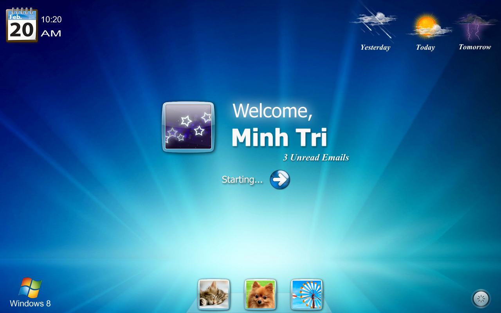

Programmers Shocked by Microsoft Announcement!
Windows 8 has been showcased. Another brilliant platform for users to work on and developers to build on. But what has always been a positive thing on previous windows platforms was that designers just had to make a few tweaks to make their already existing software compatible with the new operating systems. Not any more guys.
When Microsoft unveiled Windows 8 programmers were told that all their experience, knowledge, and every program they have written in the past would be useless on Windows 8. Microsoft is going all out to make Windows 8 a perfect tablet OS. Obviously the 8 is completely touch friendly, but that’s not the issue.

It is the fact that tablet PCs require a different king of environment. A rich interactive set of applications is required. For these Windows 8 will include a new set of API’s for developing the same. Microsoft Vice President Julie Larson Green said that devs would now use html5 and JavaScript to create the new Win 8 desktop experience.
This obviously is not going down well with seasoned Windows developers. Over the years they have learned and mastered various Windows technology ranging from VB6 to .Net and now C# all in some way or the other contributing to the users desktop experience. Now all of a sudden Microsoft is taking a new road and discarding all its old tried and tested technology.
But Microsoft has always shown inability in sticking to technology. Previously Microsoft’s solution to rich web content was Silverlight its own in house solution. But with IE 9 Microsoft switched sides and teamed up with HTML 5. This despite Silverlight being a much better choice for creating interactive web apps. HTML has and always will be a way to create and design structured text documents. Silverlight on the other hand allows devs to work with buttons, icons and events.
Thus, Microsoft is making a statement, we don’t care if the technology is not stable yet or doesn’t have a lot of potential – it needs to be fast. Stepping down from Silverlight to HTML 5 and now Windows 8 shows Microsoft going exactly in that direction.